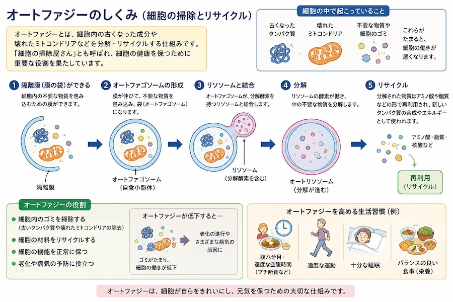
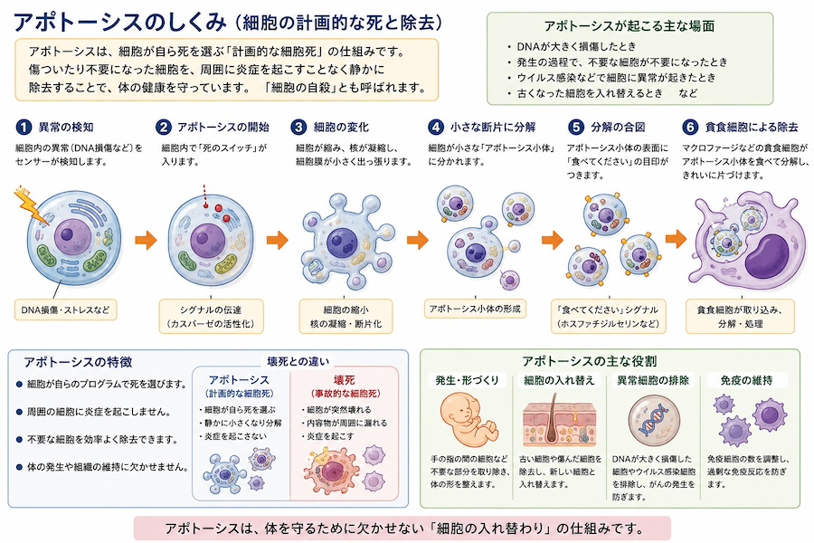

公開日：2026年8月｜最終更新：2026年8月
細胞内の機能を司っている「酵素」タンパク質や、細胞の形を構築している「構造タンパク質」などは、次第に形や働きが悪くなる「変性」という状態になります。
変性したたんぱく質を元の状態に戻す機構（分子シャペロン）もありますが、ほとんどは、次で述べる作用により分解除去されます。
「ユビキチン・プロテアソーム系（2004年ノーベル化学賞受賞）」は、ユビキチンという小さなタンパク質が、変性したタンパク質に目印をつけた後、プロテアソームというタンパク質を分解する装置が結合して、異常タンパク質をアミノ酸まで分解して掃除します。
分解により生じたアミノ酸は「リサイクル」されます。
これ以外に、異常なたんぱく質の大きな塊などは、次にオートファジーと呼ばれる機構により分解されます（後述）。
細胞膜を構成する脂質は、活性酸素の攻撃を受けると「過酸化脂質」と呼ばれる傷ついた脂質になります。
軽度の損傷であれば抗酸化酵素や抗酸化物質によって修復されますが、修復できない場合には分解・除去されます。
また、損傷した細胞膜や細胞小器官はオートファジーによって取り除かれます。
DNAの損傷及び除去の機構については、別ページを参照ください。
不要な物質を分解、リサイクルする仕組みであり、「細胞の掃除」とも呼ばれます。
私たちの細胞の中で、栄養を使ってATPというエネルギーを生産している器官（オルガネラ）「ミトコンドリア」も次第に、機能しなくなります。それを除去しないと、老廃物が細胞内部に溜まってしまうことになります。
古くなったミトコンドリアや異常たんぱく質などを分解・再利用する仕組みを「オートファジー」と呼びます。下の"コラム”を参照してください。

細胞内部を綺麗に掃除する機構ですが、詳細は図１の解説をお読みください。
オートファジーや異常たんぱく質除去機構が機能しなくなると、細胞内にはいろいろな「ゴミ」が貯まることになります。 細胞内の空間は有限ですので、いろいろな細胞の機能が不全になると言われています。
「加齢」によって、これらの除去機構の能力は、低下することがわかっています。 したがって、加齢に伴う老化の一因として、オートファジー能力の低下が関与していると考えられます。
オートファジーには、がん予防に働く側面があります。
オートファジーは、細胞内に蓄積した異常タンパク質や傷ついたミトコンドリアを除去することで、DNA損傷や慢性炎症を減らし、がんの発生を抑える働きがあると考えられています。
別に、がん細胞を助けてしまう側面を持ちます。
すでに発生したがん細胞もオートファジーを利用して栄養不足や抗がん剤治療を乗り越えることがあります。 このためオートファジーは、がん予防には有利に働く一方、進行したがんではがん細胞を助ける場合もあります。
つまり、オートファジーは、「善玉」と「悪玉」の両側面を持つのです。
細胞の品質管理をしているのが、「アポトーシス」と呼ばれる機構です。
「アポトーシス」とは、細胞が自ら死を選ぶ仕組みです。
細胞が大きく損傷した場合や不要になった場合に、周囲の組織へ炎症を起こさないよう静かに除去されます。そのため「細胞の自殺」と呼ばれています。私たちの体を守るための重要な仕組みです。詳細は下の"コラム"を参照してください。

「アポトーシス」は、細胞が自ら死（分解）を選ぶ「計画的な細胞死」の仕組みです。
細胞が突然壊れるような「壊死」とは異なり、周りの細胞に悪影響を及ぼしません。
「アポトーシス」の詳細は、図２の解説をお読みください。
アポトーシスで不要な細胞を除去し、そのスペースに新しい細胞が入れば、例えば、皮膚や腸では、頻繁に細胞の更新が行われています。健康な組織を維持するための重要な働きです。
傷んだ細胞は、老化においてよくみられ、「老化細胞」とも呼ばれます。
その細胞は炎症を引き起こす炎症物質を分泌し、慢性炎症の原因になります。
DNAに大きな損傷を受けた細胞は、本来アポトーシスによって除去されます。
しかし、アポトーシスの仕組みに異常が起こると、傷ついた細胞が生き残り、がん化する可能性があります。
「アポトーシスは、周囲に炎症を起こさずに不要な細胞を除去する仕組みです」。
詳細はDNA損傷のページをご覧ください。
私たちの体には、DNA損傷を検知し、修復し、それでも異常が残る場合には細胞を除去する品質管理システムがあります。オートファジーやアポトーシスはその中心的な役割を担っています。
異常タンパク質の除去、DNA修復、オートファジー、アポトーシスなどの仕組みが協力することで、異常細胞の蓄積を防ぎ、発がんリスクを低下させています。
「健康」は臓器だけでなく細胞レベルで維持されています。細胞内の掃除や細胞の入れ替わりが正常に行われることで、体全体の機能が保たれています。
オートファジーやアポトーシスが適切に働くことで、傷んだ細胞や細胞内の老廃物が蓄積しにくくなり、老化の進行を緩やかにする可能性があります。
高齢になっても細胞の掃除と入れ替わりは続いています。この仕組みを支えることが、健康寿命の延伸につながると考えられています。
オートファジーは細胞内部の掃除をしている。
アポトーシスは傷んだ細胞を除去している。
この2つの仕組みが老化やがん予防を支えている。
私たちの細胞は毎日、活性酸素などによって傷ついています。しかし、オートファジーが細胞内を掃除し、修復できない細胞はアポトーシスによって除去されます。そして空いた場所には新しい細胞が作られます。これが「新陳代謝」です。
新陳代謝を支えるためには、新しい細胞を作る材料が必要です。その材料が毎日の食事から摂取するタンパク質、脂質、ビタミン、ミネラル、そしてエネルギー（カロリー）です。
「健康な細胞は、健康な食事から作られるのです」。